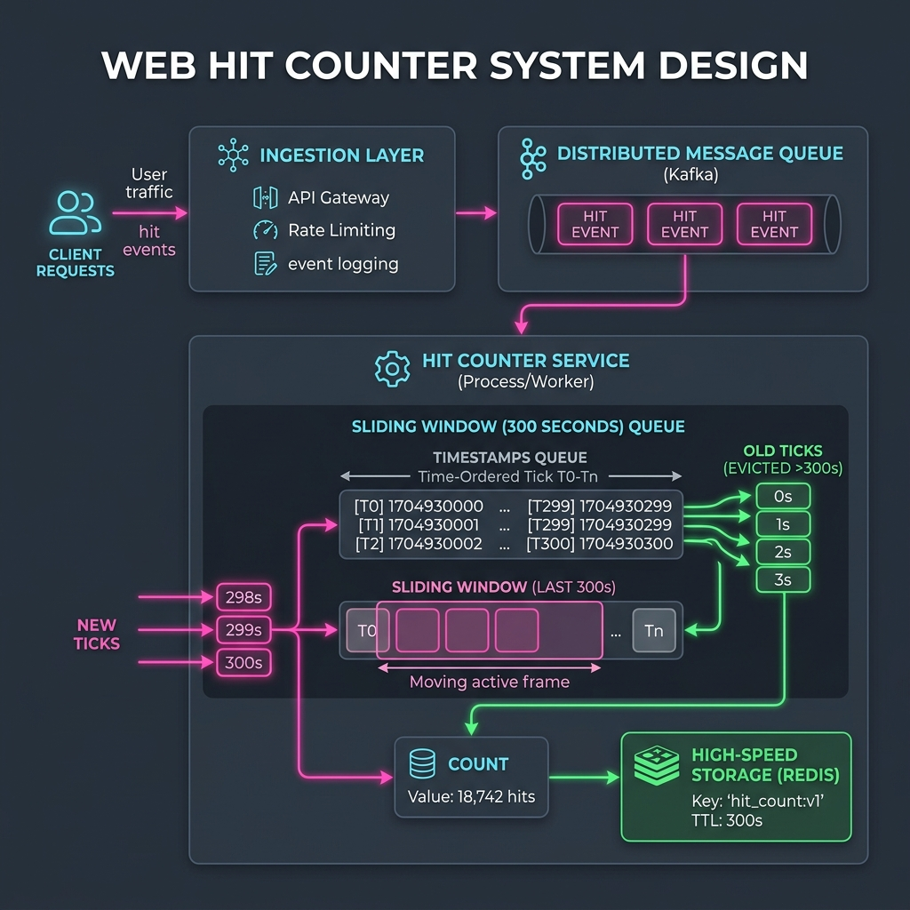

Monitoring system load and user activity is essential for modern backend services. A standard tool used for this is a Hit Counter. This system records the frequency of requests (hits) over a rolling temporal window, typically the last 5 minutes (300 seconds). Hit counters are widely used in rate limiting (protecting APIs from abuse), real-time traffic analytics, and security logging systems.
Our hit counter needs to support two operations:
hit(timestamp): Registers a hit at a given second-level timestamp.getHits(timestamp): Calculates the total hits received in the past 300 seconds (i.e., fromtimestamp - 299totimestamp).

To understand how a hit counter manages rolling time, imagine a security guard standing at a theme park turnstile. The park has a special attraction where visitors are only allowed to stay for exactly 5 minutes (300 seconds).
Every time a visitor enters, the guard stamps a ticket with their exact entry time and places it in a box in chronological order. When the park manager asks, 'How many people are in the attraction right now?', the guard checks the current time. He goes to the front of the ticket pile and throws away any ticket that was stamped more than 300 seconds ago. The number of remaining tickets in the box is the exact count of active visitors. In software, this box is a Queue, where new entries are added to the back and expired entries are removed from the front.
The Algorithmic Design (Using a Queue)
Since incoming request timestamps are guaranteed to arrive in increasing order, a Queue is the perfect data structure for this problem:
- Recording Hits: When a request arrives, we append the current timestamp to the back of the queue. This is a simple
O(1)operation. - Pruning Expired Hits: When retrieving the hit count, we check the oldest timestamp at the front of the queue. If it is older than 300 seconds relative to the current timestamp, we remove it. We repeat this check in a loop until we find a timestamp that is still valid.
- Calculating the Count: Once all expired timestamps are removed, the current size of the queue represents the active hits.
- Complexity: While the count retrieval involves a loop, each timestamp is added to the queue once and removed at most once. This results in an amortized O(1) runtime per request, with space complexity proportional to the number of hits in the 5-minute window.
Step-by-Step Execution Walkthrough
Let's trace a quick scenario where hits arrive at seconds 1, 2, and 3. Our queue becomes [1, 2, 3]:
- Query at second 4: Calling
getHits(4)compares the oldest timestamp (1) with4. Since4 - 1 = 3(less than 300), no entries are removed. The queue size remains3. - Query at second 300: Calling
getHits(300)checks index1again. Since300 - 1 = 299, the entry is still valid. The count remains3. - Query at second 301: Calling
getHits(301)triggers eviction. Since301 - 1 = 300(stale), we remove1. The next entry (2) is valid (301 - 2 = 299). We stop the loop and return the new queue size:2.
Key Explanations
Here is why the main logic in the solution is important:
queue.offer(timestamp): Adds the incoming timestamp to the queue. It maintains chronological ordering since timestamps are guaranteed to arrive in non-decreasing order.while (!queue.isEmpty() && timestamp - queue.peek() >= 300): The pruning loop. It checks the oldest element at the front and discards it if it has aged past 300 seconds.queue.size(): Returns the remaining active hits in the rolling 5-minute window in constant time.
Full Code Solution
Below is the complete, self-contained Java source code that solves this problem. It also includes a main method that traces the execution with console outputs.
package io.practise.dsa;
import java.util.*;
public class DesignHitCounter {
public static class HitCounter {
// Queue to store the timestamps of incoming hits in chronological order
private final Queue<Integer> queue;
public HitCounter() {
this.queue = new LinkedList<>();
}
// Record a hit at the given timestamp
public void hit(int timestamp) {
queue.offer(timestamp);
}
// Return the number of hits in the last 5 minutes (300 seconds)
public int getHits(int timestamp) {
// Evict hits older than 300 seconds from the front of the queue
while (!queue.isEmpty() && timestamp - queue.peek() >= 300) {
queue.poll();
}
return queue.size();
}
}
public static void main(String[] args) {
HitCounter counter = new HitCounter();
System.out.println("--- Design Hit Counter Demonstration ---");
System.out.println("Logging hits at seconds 1, 2, and 3...");
counter.hit(1);
counter.hit(2);
counter.hit(3);
System.out.println("Hits at second 4: " + counter.getHits(4) + " (Expected: 3)");
System.out.println("Hits at second 300: " + counter.getHits(300) + " (Expected: 3)");
System.out.println("Hits at second 301: " + counter.getHits(301) + " (Expected: 2) [Hit at second 1 expired]");
System.out.println("\nLogging another hit at second 302...");
counter.hit(302);
System.out.println("Hits at second 302: " + counter.getHits(302) + " (Expected: 3) [Hits at 2, 3, 302 are active]");
}
}Conclusion & Complexity Analysis
This queue-based design provides a highly efficient, rolling-window logging system. By leveraging the chronological order of incoming data, we can continuously prune stale logs in amortized constant time, ensuring our system remains fast and memory-efficient.